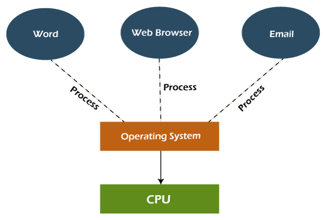

Types of Operating System (OS)
- An operating system is a well-organized collection of programs that manages the computer hardware.
- It is a type of system software that is responsible for the smooth functioning of the computer system.

1. Batch Operating System
- In the 1970s, Batch processing was very popular. In this technique, similar types of jobs were batched together and executed in time. People were used to having a single computer which was called a mainframe.
- In Batch operating system, access is given to more than one person; they submit their respective jobs to the system for the execution.
- The system put all of the jobs in a queue on the basis of first come first serve and then executes the jobs one by one. The users collect their respective output when all the jobs get executed.
- The purpose of this operating system was mainly to transfer control from one job to another as soon as the job was completed. It contained a small set of programs called the resident monitor that always resided in one part of the main memory. The remaining part is used for servicing jobs.
Advantages of Batch OS
- The use of a resident monitor improves computer efficiency as it eliminates CPU time between two jobs.
Disadvantages of Batch OS
- Starvation
- Batch processing suffers from starvation.
- For Example:
- There are five jobs J1, J2, J3, J4, and J5, present in the batch. If the execution time of J1 is very high, then the other four jobs will never be executed, or they will have to wait for a very long time. Hence the other processes get starved.
- Not Interactive
- Batch Processing is not suitable for jobs that are dependent on the user's input. If a job requires the input of two numbers from the console, then it will never get it in the batch processing scenario since the user is not present at the time of execution.
2. Multiprogramming Operating System
- Multiprogramming is an extension to batch processing where the CPU is always kept busy. Each process needs two types of system time: CPU time and IO time.
- In a multiprogramming environment, when a process does its I/O, The CPU can start the execution of other processes. Therefore, multiprogramming improves the efficiency of the system

Advantages of Multiprogramming OS
- Throughout the system, it increased as the CPU always had one program to execute
- Response time can also be reduced.
Disadvantages of Multiprogramming OS
- Multiprogramming systems provide an environment in which various systems resources are used efficiently, but they do not provide any user interaction with the computer system.
3. Multiprocessing Operating System
- In Multiprocessing, Parallel computing is achieved. There are more than one processors present in the system which can execute more than one process at the same time. This will increase the throughput of the system
- In Multiprocessing, Parallel computing is achieved. More than one processor present in the system can execute more than one process simultaneously, which will increase the throughput of the system.

Advantages of Multiprocessing operating system:
- Increased reliability: Due to the multiprocessing system, processing tasks can be distributed among several processors. This increases reliability as if one processor fails, the task can be given to another processor for completion.
- Increased throughout: As several processors increase, more work can be done in less.
Disadvantages of Multiprocessing operating System
- Multiprocessing operating system is more complex and sophisticated as it takes care of multiple CPUs simultaneously.
4. Multitasking Operating System

- The multitasking operating system is a logical extension of a multiprogramming system that enables multiple programs simultaneously. It allows a user to perform more than one computer task at the same time.

Advantages of Multitasking operating system
- This operating system is more suited to supporting multiple users simultaneously.
- The multitasking operating systems have well-defined memory management.
Disadvantages of Multitasking operating system
- The multiple processors are busier at the same time to complete any task in a multitasking environment, so the CPU generates more heat.
5. Network Operating System
- An Operating system, which includes software and associated protocols to communicate with other computers via a network conveniently and cost-effectively, is called Network Operating System.

Advantages of Network Operating System
- In this type of operating system, network traffic reduces due to the division between clients and the server.
- This type of system is less expensive to set up and maintain.
Disadvantages of Network Operating System
- In this type of operating system, the failure of any node in a system affects the whole system.
- Security and performance are important issues. So trained network administrators are required for network administration.
6. Real Time Operating System
- In Real-Time Systems, each job carries a certain deadline within which the job is supposed to be completed, otherwise, the huge loss will be there, or even if the result is produced, it will be completely useless.
- The Application of a Real-Time system exists in the case of military applications, if you want to drop a missile, then the missile is supposed to be dropped with a certain precision.
Advantages of Real-time operating system:
- Easy to layout, develop and execute real-time applications under the real-time operating system.
- In a Real-time operating system, the maximum utilization of devices and systems.
Disadvantages of Real-time operating system:
- Real-time operating systems are very costly to develop.
- Real-time operating systems are very complex and can consume critical CPU cycles.
7. Time-Sharing Operating System
- In the Time Sharing operating system, computer resources are allocated in a time-dependent fashion to several programs simultaneously. Thus it helps to provide a large number of user's direct access to the main computer. It is a logical extension of multiprogramming. In time-sharing, the CPU is switched among multiple programs given by different users on a scheduled basis.
- A time-sharing operating system allows many users to be served simultaneously, so sophisticated CPU scheduling schemes and Input/output management are required.
- Time-sharing operating systems are very difficult and expensive to build.
Advantages of Time Sharing Operating System
- The time-sharing operating system provides effective utilization and sharing of resources.
- This system reduces CPU idle and response time.
Disadvantages of Time Sharing Operating System
- Data transmission rates are very high in comparison to other methods.
- Security and integrity of user programs loaded in memory and data need to be maintained as many users access the system at the same time.
8. Distributed Operating System
- The Distributed Operating system is not installed on a single machine, it is divided into parts, and these parts are loaded on different machines. A part of the distributed Operating system is installed on each machine to make their communication possible. Distributed Operating systems are much more complex, large, and sophisticated than Network operating systems because they also have to take care of varying networking protocols.
Advantages of Distributed Operating System
- The distributed operating system provides sharing of resources.
- This type of system is fault-tolerant.
Disadvantages of Distributed Operating System
- Protocol overhead can dominate computation cost.